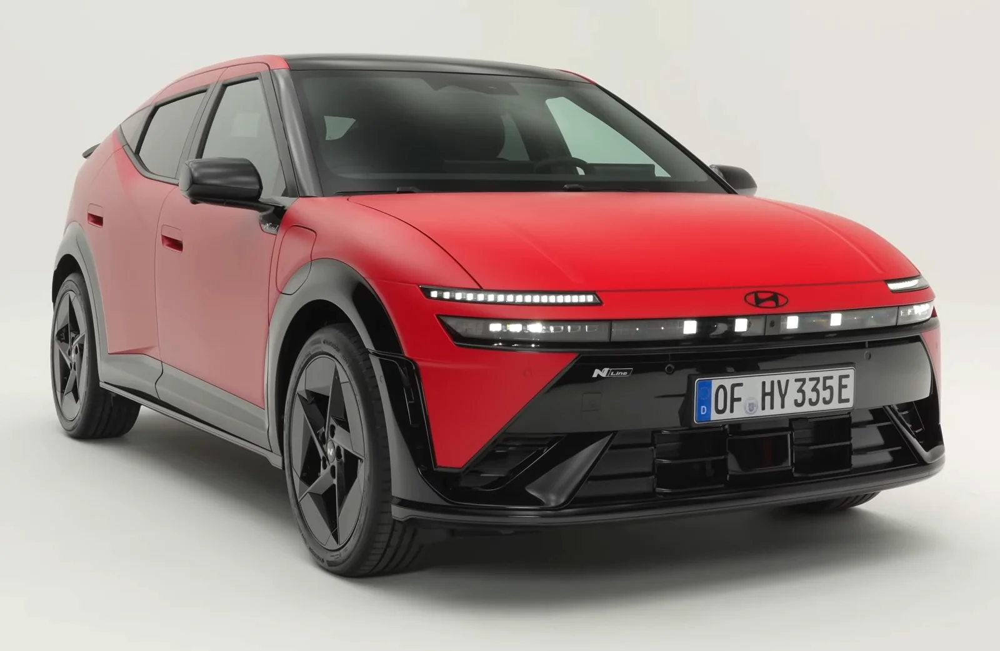
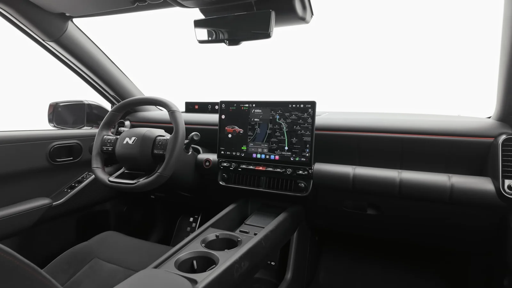
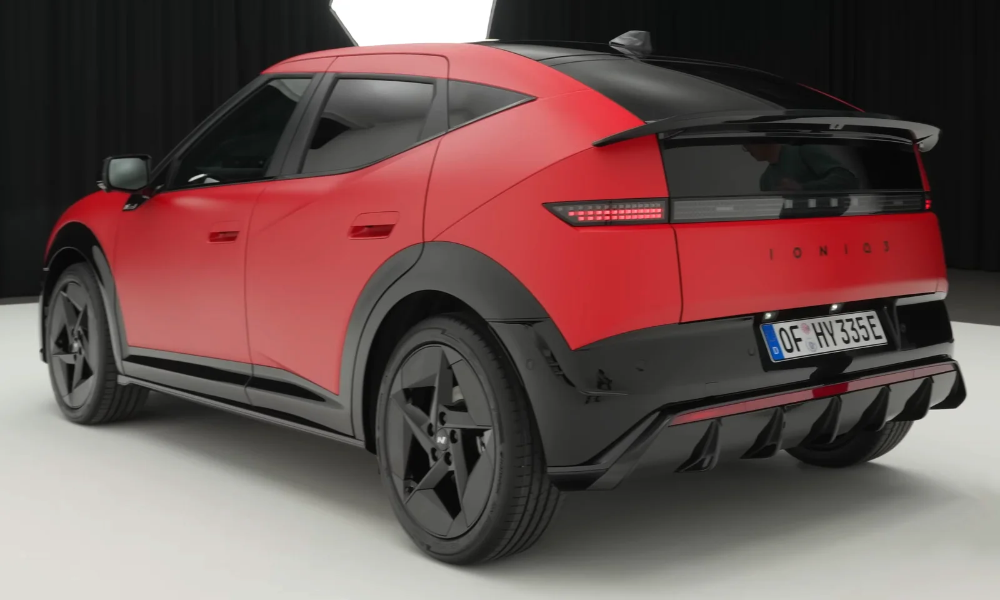

▲ 신형 아반떼 대시보드. 운전석 앞 슬림 디지털 계기판이 기본형에서는 35만 원 선택사양으로 빠졌다 ⓒ 현대차
현대차 신형 아반떼의 기본형에서 운전석 앞 디지털 계기판이 사라졌다. 정확히는 9.9인치(약 25.1cm) 슬림 디지털 계기판이 35만 원짜리 선택사양으로 바뀌었다. 그리고 아이오닉 3는 한 걸음 더 갔다. 기본 트림에서는 계기판이 빠질 뿐 아니라, 돈을 더 내고 넣을 수 있는 선택지 자체가 없다.
1. 무엇이 옵션이 됐나

▲ 신형 아반떼. 기본 가격은 2,398만 원으로 책정됐다 ⓒ 현대차
국내 신형 아반떼 기준으로, 운전석 정면에 놓이던 9.9인치(약 25.1cm) 슬림형 디지털 계기판이 기본 구성에서 빠졌다. 35만 원을 더 내야 넣을 수 있는 항목이 된 것이다. 금액만 보면 크지 않지만, 대상이 '계기판'이라는 점에서 반응이 갈린다.
상위 트림으로 올라가면 셈법이 달라진다. 프리미엄 트림에서는 약 37.1cm 플레오스 커넥트 인포테인먼트와 슬림 디스플레이가 83만 원짜리 묶음 옵션으로 제공된다. 즉 계기판만 따로 35만 원에 넣는 구성은 기본형에서만 가능하고, 위로 갈수록 다른 사양과 함께 사야 하는 구조다.
| 구분 | 계기판 제공 방식 | 가격 |
|---|---|---|
| 아반떼 기본형(국내) | 9.9인치 슬림 디스플레이 단품 선택 | 35만 원 |
| 아반떼 프리미엄(국내) | 플레오스 커넥트 + 슬림 디스플레이 묶음 | 83만 원 |
| 아이오닉 3 어드밴스(영국) | 미적용 · 선택 옵션 없음 | — |
| 아이오닉 3 프리미엄 이상(영국) | 기본 적용 | 기본 |
2. 아이오닉 3는 옵션조차 없다

▲ 현대 아이오닉 3. 영국 기준 기본 트림인 어드밴스에는 운전석 앞 계기판이 아예 들어가지 않는다 ⓒ 현대차
아이오닉 3는 사정이 더 단순하다. 영국 기준 진입 트림인 어드밴스(약 2만 2,245파운드)에는 운전석 앞 계기판이 들어가지 않고, 아반떼처럼 35만 원을 내고 추가할 수 있는 옵션 항목도 마련돼 있지 않다. 계기판을 원한다면 약 2만 5,595파운드부터 시작하는 프리미엄 이상 트림으로 올라가야 한다.
여기에 헤드업 디스플레이도 제공되지 않는다. 결과적으로 어드밴스 트림 운전자는 속도를 확인할 방법이 중앙 화면 하나뿐이다. 아반떼가 '35만 원짜리 선택'이라면, 아이오닉 3 기본 트림은 '선택 자체가 없는' 상태에 가깝다. 국내 아이오닉 3의 트림 구성과 가격표는 아직 이 기준이 그대로 적용된다고 단정할 수 없으므로, 계약 전에 국내 사양표를 별도로 확인해야 한다.
3. 빼면 무엇이 달라지나

▲ 아이오닉 3 실내(사양에 따라 계기판 구성이 다르다). 계기판을 선택하지 않으면 주행 정보가 중앙 화면으로 모인다 ⓒ 현대차
계기판을 선택하지 않은 차량은 속도, 제한속도 표지, 주행 가능 거리, 효율 정보가 모두 중앙 인포테인먼트 화면에 표시된다. 정보가 사라지는 것이 아니라 위치가 옮겨지는 방식이다. 문제는 그 위치가 운전자의 시선축에서 벗어나 있다는 점이다.
참고 운전석 정면 계기판은 시선을 크게 움직이지 않고도 속도를 확인할 수 있도록 배치된 장치다. 정보가 중앙으로 옮겨가면 확인할 때마다 시선이 도로에서 옆으로 이동하게 된다.
4. 법으로는 문제가 없나 — '직접시계의 범위내'

▲ 아이오닉 3 후면. 계기판을 없앤 구성이 안전기준을 어긴 것은 아니지만, 기준의 문구는 위치를 명확히 지정하고 있다 ⓒ 현대차
국내에서 속도계는 '있으면 좋은 장치'가 아니라 의무 장착 항목이다. 「자동차 및 자동차부품의 성능과 기준에 관한 규칙」(자동차규칙) 제54조 제1항은 "자동차에는 제110조에 따른 속도계와 통산 운행거리를 표시할 수 있는 구조의 주행거리계를 설치하여야 한다"고 정하고 있다.
더 눈여겨볼 조항은 표시 방식을 규정한 제110조다. 제1항 제1호는 속도표시부에 대해 이렇게 적고 있다.
자동차규칙 제110조(속도계) 제1항 제1호
"속도표시부는 운전자의 직접시계의 범위내에 위치하고, 주·야간에 속도값을 명확히 읽을 수 있을 것"
규정은 속도 표시가 계기판 자리에 있어야 한다고 못 박지는 않는다. '운전자의 직접시계 범위' 안에 있고 주·야간에 값을 명확히 읽을 수 있으면 요건을 충족한다. 테슬라처럼 중앙 화면에 속도를 띄우는 차가 국내에서 정상적으로 인증받아 팔리는 이유가 여기에 있다. 이번 아반떼·아이오닉 3의 구성 역시 현행 안전기준을 위반한 것은 아니다.
다만 조문이 굳이 '직접시계의 범위내'라는 표현을 쓰고 있다는 점은 짚어둘 만하다. 같은 조 제2항은 속도계 지시오차까지 '0 ≤ 지시속도 − 실제속도 ≤ 실제속도/10 + 6(km/h)' 식으로 세밀하게 규정한다. 속도 표시를 그만큼 중요하게 다루는 기준 체계 안에서, 그 표시를 운전자 정면에서 옆으로 옮기는 선택이 '35만 원'이라는 가격표를 달고 나온 셈이다.
5. 해외 매체의 지적

▲ 현대 아이오닉 3. 아반떼와 함께 이번 계기판 옵션화 대상에 포함됐다 ⓒ 현대차
미국 자동차 매체 카스쿱스는 이 변화를 두고 원가 절감 자체는 이해할 수 있지만 계기판까지 옵션으로 돌린 것은 부정적이라고 평가했다. 특히 "주행 중 속도를 확인하려고 중앙 인포테인먼트 화면으로 시선을 옮기는 일은 번거롭다"는 점을 문제로 짚었다. 비용을 줄이려면 다른 곳을 먼저 손대는 편이 낫다는 취지다.
6. 테슬라식 배치와 같은 것으로 볼 수 있나
계기판 없이 중앙 화면만 두는 구성 자체가 처음은 아니다. 테슬라 모델3와 모델Y가 대표적이다. 다만 두 경우는 성격이 다르다. 테슬라는 처음부터 계기판이 없는 것을 전제로 실내를 설계했고, 화면 배치와 정보 구성도 그에 맞춰 만들어졌다.
반면 이번 사례는 계기판이 있는 설계에서 그것을 빼는 방식이다. 같은 차의 상위 트림에는 계기판이 그대로 들어간다. 결과적으로 기본형 구매자는 '설계된 자리'가 비어 있는 상태로 차를 받게 된다. 카스쿱스의 지적도 이 지점을 향한다.
7. 계약 전에 확인할 것

▲ 신형 아반떼 후면. 기본형 계약 시 계기판 옵션 포함 여부를 견적서에서 확인해야 한다 ⓒ 현대차
체크포인트
- 기본형 견적서에 계기판(클러스터) 항목이 포함돼 있는지 반드시 확인한다. 아반떼 기본형은 단품 35만 원으로 추가할 수 있다.
- 아반떼 프리미엄 이상에서는 계기판이 플레오스 커넥트와 83만 원 묶음으로 넘어간다. 계기판만 원한다면 기본형이 오히려 유리할 수 있다.
- 아이오닉 3는 기본 트림에서 옵션 추가가 불가능하다(영국 기준). 계기판이 필요하면 트림을 올리는 것 외에 방법이 없으므로, 트림 간 가격 차이 전체를 계기판 값으로 계산해야 한다.
- 계약 전에 시승차에서 중앙 화면 속도 표시를 직접 확인해보는 편이 좋다. 표시 크기와 위치는 사양표만으로 판단하기 어렵다.
- 중고차로 되팔 때도 계기판 유무가 사양 차이로 남는다.
계기판 없는 사양이 안전기준을 위반한 것은 아니다. 다만 자동차규칙이 속도표시부의 위치와 가독성을 따로 규정하고 있다는 사실은, 이 항목이 원래 '옵션의 영역'이 아니었다는 점을 보여준다. 원가를 어디서 줄일지는 제조사의 선택이지만, 그 결과를 확인하고 값을 치르는 쪽은 소비자다. 견적 단계에서 한 줄을 더 보는 것이 최선의 대응이다.
조문 원문은 국가법령정보센터에서 확인할 수 있다. 자동차규칙 원문 바로가기